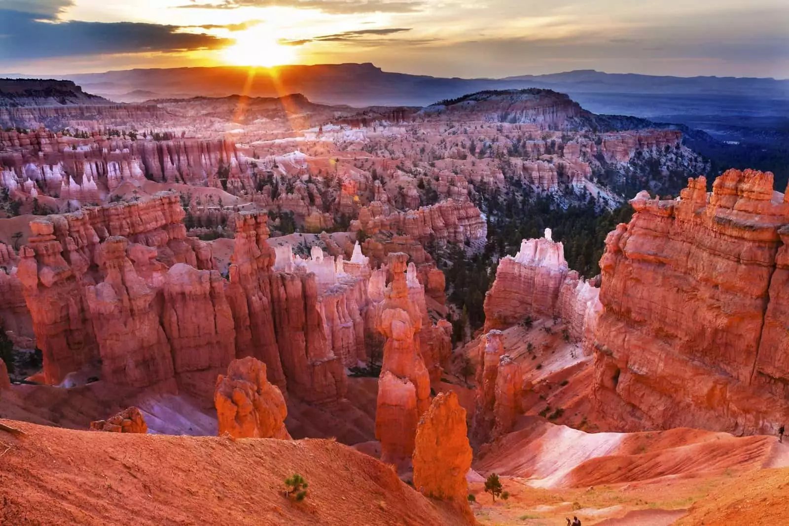
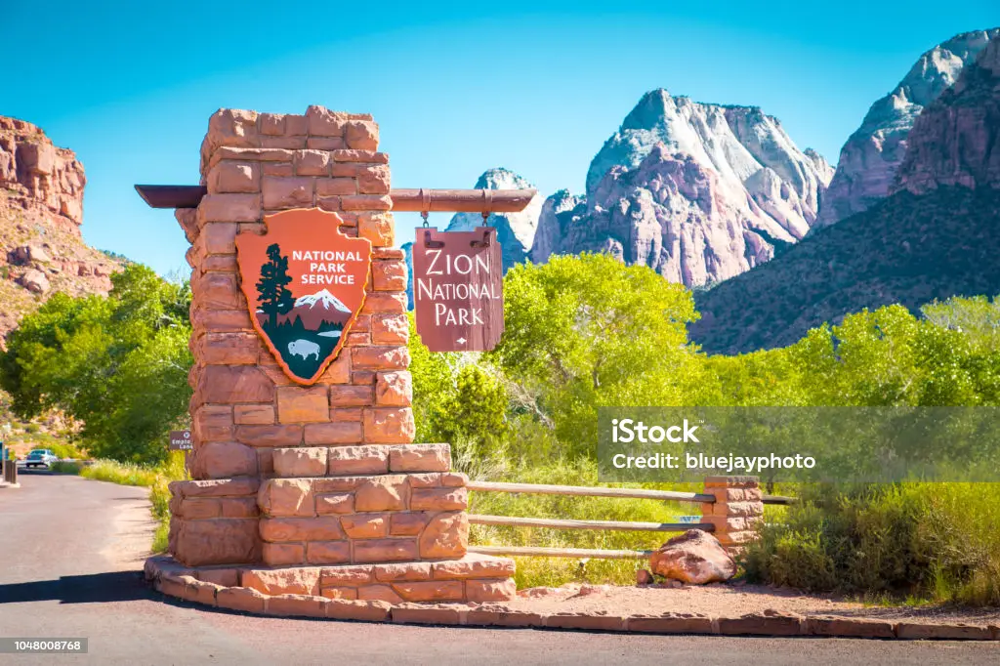
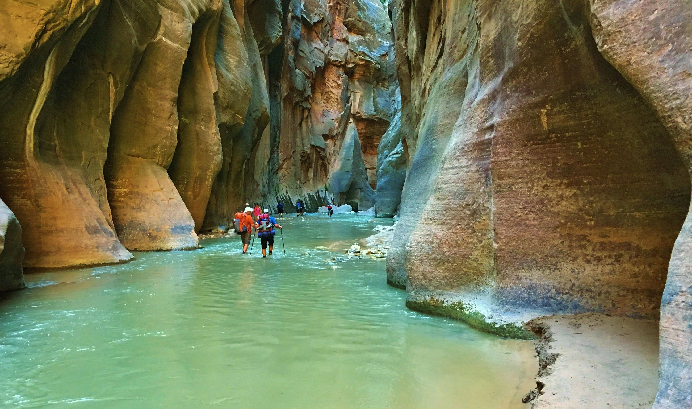
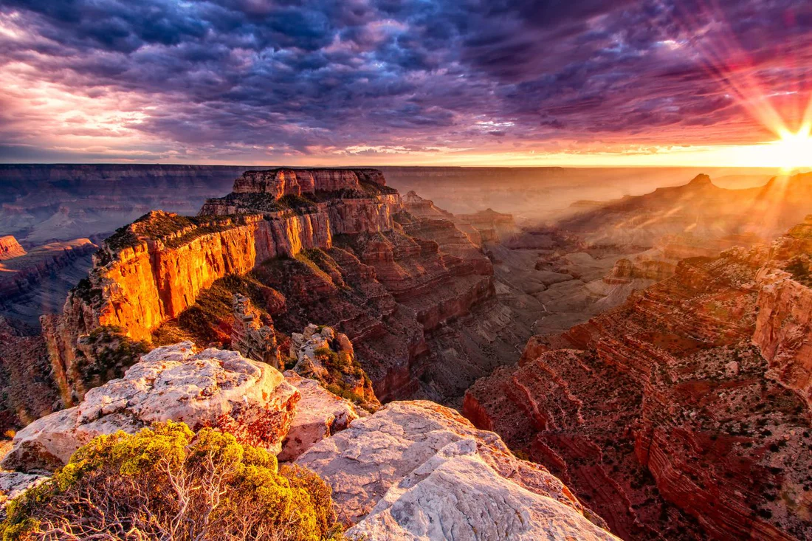
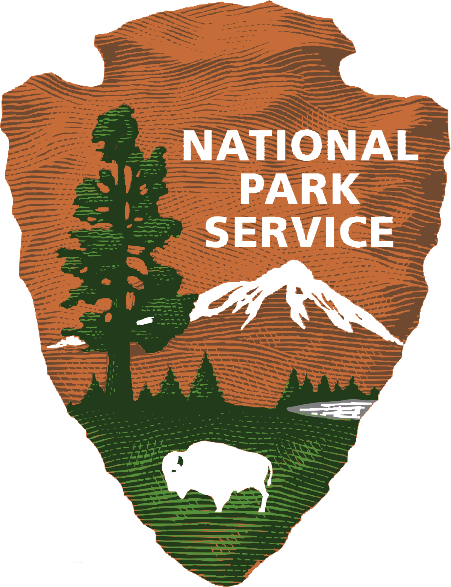

In October of 2021 my family and I set off west for a 21 hour drive. We went through the flats of the mid-west and even the rockie mountains which were quite scary. Until we reached our first stop Byrce Canyon. Next we traveled on into Utah until we got to Zion national park. The first day we were there we just drove through the park then went to look at old native american sites near by. The next day however was even better we got to hike the narrows, the water was cold but so worth it. Finally we couldn't head home with out seeing the Grand Canyon so we set off for Arizona. The colors were amazing and it was so vast it was surreal. By this time it had been a week, everyone was tiered from hiking and ready for home so home we went.

©